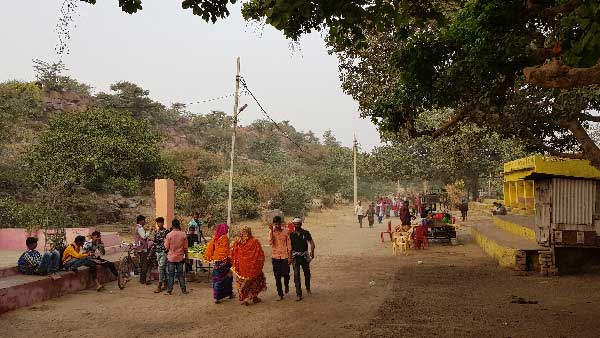

Uttar Pradesh
Braj Bhumi: Land of Divine Love
Enter Braj Bhumi, the sacred land where the divine becomes intimately personal. This is not merely a place of pilgrimage; it is the earthly manifestation of Goloka, the eternal abode of Radha and Krishna. Here, every forest, river, and particle of dust is saturated with the sweetness (*mādhurya*) of their divine pastimes (*līlā*). A journey through Braj is an immersion into *prema-bhakti*, the path of pure, unadulterated love for God.
The Puranic Significance: A Living Dhama
The Bhagavata Purana and other Vaishnava texts describe Braj as a living, spiritual landscape. Unlike other Tirthas that grant liberation (*mokṣa*), Braj bestows the higher gift of *prema*, or divine love. It is the stage upon which Lord Krishna performed his most enchanting childhood and youthful pastimes, from stealing butter in Gokul to the divine Rasa Lila in the forests of Vrindavan. The entire region is considered a *dhama*—a divine realm that descended to earth along with the Lord.
Key Spiritual Experiences
Mathura: The Divine Birthplace. The pilgrimage begins at the Krishna Janmasthan Temple Complex in Mathura, the sacred site of Lord Krishna's birth. A visit to the Vishram Ghat on the banks of the Yamuna, where the Lord rested after slaying Kansa, is essential for purification.
Vrindavan: The Forest of Devotion. The heart of Braj, Vrindavan is home to thousands of temples. The *darśana* at Banke Bihari Temple, where the Lord is worshipped in a playful mood, and the Radha Raman Temple, with its self-manifested deity, are profound experiences.
Govardhan Parikrama: Circumambulating the sacred Govardhan Hill is a central act of devotion. Lord Krishna famously lifted this hill to protect the residents of Braj from the wrath of Indra. The *parikrama* is a walk of faith, honoring the Lord as the protector of his devotees.
Barsana and Nandgaon: Experience the unique culture of Radha Rani's village, Barsana, and Lord Krishna's childhood home, Nandgaon. The Lathmar Holi festival celebrated here is a vibrant and playful enactment of the divine love between Radha and the Gopis for Krishna.